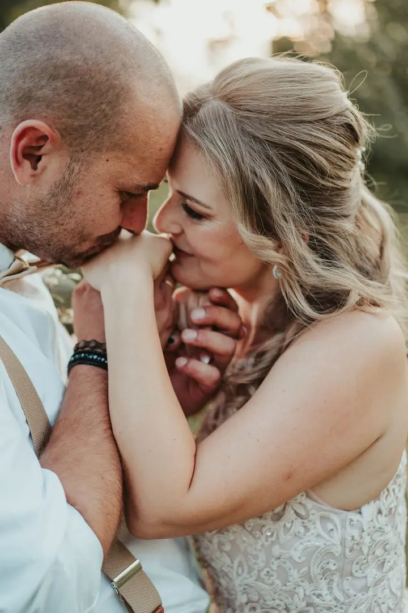
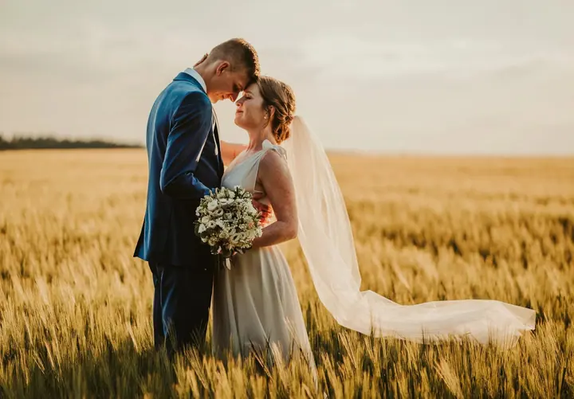
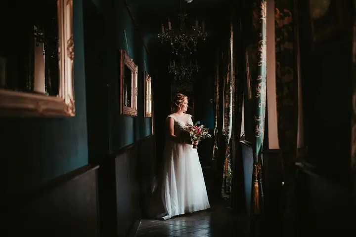

Svatební den
Fotím váš den tak, jak skutečně plyne, od příprav nevěsty přes obřad až po krájení dortu a první tanec. Přirozeně a dokumentárně, bez křečí a přetvářky.

Jmenuji se Lily Bezoušková, je mi 28 let a jsem fotografka z Kolínska. Fotím svatby, páry a rodiny venku v přírodě, nejraději v měkkém podvečerním světle. Nemusíte umět …
Rezervovat termínUž jako malá jsem ráda pozorovala svět hledáčkem fotoaparátu. První zrcadlovka mě pak doprovázela na všech cestách a příroda a česká krajina se mi do tvorby prolínají dodnes. Postupem času se přidalo i focení lidí, protože lidé tvoří náš svět.


Nejsem zastáncem strojených póz a strnulých úsměvů. Se mnou je focení hlavně velká sranda, protože i taková jsem v soukromém životě. Klidně to skončí válením se ve sněhu nebo bitvou s klasy obilí. Poradím vám, co si vzít na sebe, rozesměju vás a pomůžu přenést se přes první nejistotu.
Kromě focení zbožňuji trávit čas venku, chodit bosa v trávě, italskou kuchyni a stará místa, která mají duši. Ráda jsem offline, žiju přítomným okamžikem a vím, že ty nejlepší věci v životě jsou zadarmo.
Co fotím
Fotím váš den tak, jak skutečně plyne, od příprav nevěsty přes obřad až po krájení dortu a první tanec. Přirozeně a dokumentárně, bez křečí a přetvářky.
Procházka v přírodě kolem Kolína v měkkém podvečerním světle. Klidně vezměte i babičku, dědu nebo domácího mazlíčka.
Klidné focení venku, kde je bříško hlavní postavou. Vezměte si šaty, které ho zvýrazní, nebo třeba fotku z ultrazvuku.
Focení u vás doma v prvních týdnech po narození miminka, kde se cítíte bezpečně. Zhruba 45 minut, vždy podle potřeb miminka.
Postup
Napište mi přes formulář nebo e-mail. Rodinné a párové focení domlouváme obvykle tři týdny předem, svatbu ideálně půl roku až rok dopředu.
Místo vybírám podle světla a ročního období, většinou kousek od Kolína nebo na půl cesty k vám. Před svatbou se potkáme na předsvatební schůzce, ideálně měsíc předem, a doladíme harmonogram.
Procházíme se, zastavujeme se tam, kde nás to zaujme, a přirozeně fotíme. Rodinné focení trvá obvykle 45 až 60 minut a s dětmi se tempo řídí hlavně podle nich.
Fotky vybírám a upravuji sama v jednotném barevném rukopisu a posílám je v on-line galerii. Ze svatby odevzdávám přibližně 350 až 400 fotografií do 4 až 8 týdnů.
Otázky
Rodinné a párové focení se domlouvá obvykle tři týdny před termínem. Svatbu je dobré domluvit půl roku až rok předem, záleží na ročním období.
Nejlépe oblečení v přírodních, neutrálních barvách, které spolu ladí, třeba béžová, krémová nebo hnědá. Vyhněte se výrazným nápisům a logům a vezměte si pohodlnou obuv do terénu.
Nic se neděje. Přineste oblíbenou hračku a malou svačinu, nechte je být přirozené a já vychytám klidové chvíle. Když víte předem, že den nevyjde, focení můžeme přeložit.
Neupravené snímky neposkytuji. Každý záběr prochází pečlivou úpravou, aby celá galerie měla jemný a jednotný rukopis.